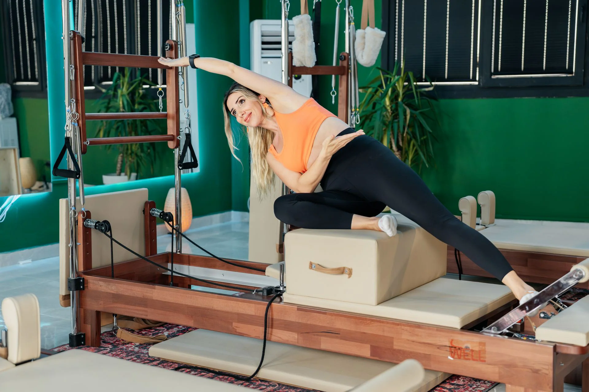
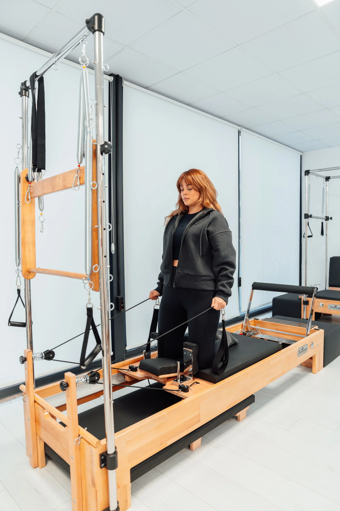

Imagem ilustrativa · não retrata o local ou a equipe
Imagem ilustrativa · não retrata o local ou a equipe01 / Fisioterapia e Pilates · Presencial e online
Movimento que aproxima do alívio.
Karliane Carvalho. Karliane Carvalho é fisioterapeuta e conduz o Pilates presencial em Tanabi e também online, com o programa Pilates em Casa.
- Fisioterapia
- Pilates online
- Tanabi
 Imagem ilustrativa · não retrata o local ou a equipe
Imagem ilustrativa · não retrata o local ou a equipe02 / Conheça a proposta
Fisioterapia e Pilates, em Tanabi e em casa.
Pilates presencial
Aulas no estúdio em Tanabi, conduzidas por uma fisioterapeuta.
Pilates em Casa
Programa online da Karliane, com aulas ao vivo e gravadas, para praticar no horário que funciona para você, respeitando seus limites. Planos explicados pelo WhatsApp.
Fisioterapia
Karliane se apresenta primeiro como fisioterapeuta e fala em usar o movimento para aliviar dores. Indicação é definida na avaliação.
Conteúdo no YouTube
Dicas de movimento no canal da Karliane, para conhecer o jeito dela ensinar.
Agende pelo WhatsApp
Informe se deseja o atendimento presencial ou o Pilates em Casa.

Imagem ilustrativa · não retrata o local ou a equipe03 / Trajetória & cuidado
Uma fisioterapeuta que também ensina Pilates.
Karliane Carvalho se apresenta como fisioterapeuta, com Pilates presencial e online. Além do estúdio em Tanabi, criou o Pilates em Casa: o aluno treina com a orientação dela, com aulas ao vivo e gravadas, e pratica no horário que funciona para ele. O conteúdo também está no Instagram e no YouTube.
- Fisioterapeuta que conduz o Pilates
- Pilates em Casa: aulas ao vivo e gravadas, de qualquer cidade
- Presencial em Tanabi e online
- Nota 5,0 nas avaliações do Google

Imagem ilustrativa · não retrata o local ou a equipe04 / Seu próximo passo
Vamos conversar?
Consulte horários, disponibilidade e condições pelo WhatsApp.
Fisioterapia e Pilates · Presencial e online